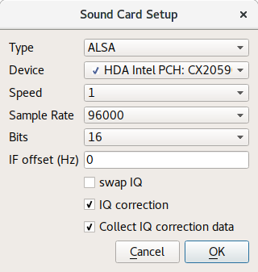
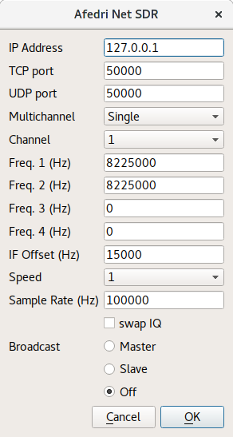
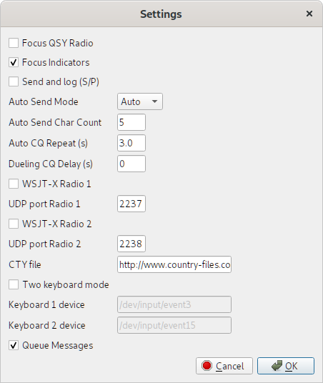
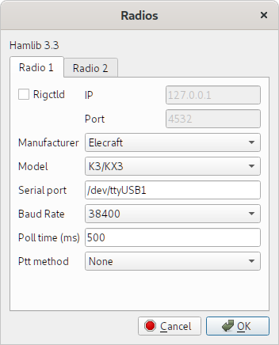
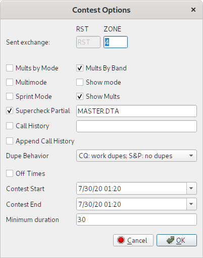

Setup
Overview
So2sdr consists of two separate executables:
- so2sdr: this is the executable for the logging program
- so2sdr-bandmap: this is the executable for the SDR bandmap
The two can be used separately from each other. For example, so2sdr can be used for logging a contest without using the visual SDR bandmap. The bandmap can also be used without so2sdr to display a bandmap for general operating or used with a separate logging program. When used together, so2sdr can control the execution of so2sdr-bandmap, or so2sdr-bandmap can be started separately by the user.
Note that older versions of so2sdr combined the two in a single program. From version 2.0.0 they have been separated. The separation provides better performance for the bandmap and allows it to be used in a number of new ways.
If you are going to use the SDR bandmap, you need to configure this first before so2sdr. The first time either program is run it will create a directory to store user settings. The default location is ~/.so2sdr (Linux) or C:/Documents and Settings/Username/so2sdr (Windows). In this directory, the default configuration file for so2sdr is so2sdr.ini, and the default configuration file for so2sdr-bandmap is so2sdr-bandmap.ini. If you are using two copies of the bandmap for SO2R, you will need to make two separate copies of so2sdr-bandmap.ini (see below).
So2sdr-bandmap setup
Typical hardware setup
So2sdr-bandmap provides a "visual bandmap" that shows the activity on the band for nearby frequencies. To use it you will need a SDR receiver connected to the IF of your contesting radio. With this type of setup, the SDR front end is automatically protected from transmitted RF and gains the benefit of the main radio's front end tuned circuits. There is also no need to tune the SDR frequency as the radio is tuned; the SDR stays tuned at the IF frequency of the host radio.
So2sdr-bandmap has been tested with the following SDR hardware:
- Softrock SDR receiver
- LP-PAN
- Afedri SDR, interfaced both via USB as a sound card, and via ethernet.
Other SDR's may work if they supply an I/Q stream over the sound card interface or via ethernet with the SDR-IP protocol. The program has been tested most with the Elecraft K3.
Important for SO2R: For SO2R usage, you need to provide two different configurations for so2sdr-bandmap, with different bandmap ID numbers (see below). Test each radio's bandmap separately, and then copy the .ini file so2sdr-bandmap.ini to a separate copy for that bandmap, such as so2sdr-bandmap1.ini and so2sdr-bandmap2.ini. So2sdr has a setting to use different so2sdr-bandmap.ini files for each radio. You can also make a separate desktop shortcut to start the bandmap for each radio, and so2sdr will detect when each has been started.
Bandmap controls
Controls from left to right:
- start button
- stop button
- setup button
- quit buton
- Mark signals: if checked, so2sdr-bandmap will peak-detect signals, placing a dot by each detected signal. This can be used to automatically tune the radio to the next signal or find the largest open space between signals.
- Gain slider: this controls the gain of the peak-detect algorithm. Typically it does not need to be adjusted often, although sometimes with heavy QRN you may want to decrease the gain. Moving the slider to the right makes the algorithm #less# sensitive (like a squelch control).
- Help
Other controls:
- Mouse:
- Left clicking on the bandmap signals will tune the radio to this frequency.
- In the frequency scale: holding down the left mouse button and drag to move the center marker.
- Right click brings up several options: an option to hide the upper toolbar; zoom (scale) setting; call delete function (if near a callsign); and IQ balance status dialog.
Setting up So2sdr-bandmap
When the program starts, click the "wrench" icon. The main setup dialog opens:
- Bandmap ID number corresponds to the radio number in so2sdr; 1 or 2.
- TCP port: this is the TCP port number used to control the bandmap. If running SO2R, each needs a different port number.
- UDP broadcast port: So2sdr-bandmap sends broadcast messages to this UDP port after mouse clicks and other evens. Two copies of the program can share the same UDP port.
- N1MM+ : if this option is selected, So2sdr-bandmap will listen for UDP broadcasts from N1MM+ logger and use them to set the center frequency. Fill in the port number below.
- SDR type: the type of SDR receiver. Click configure for further details.
- CQ Finder time (in seconds): the length of time the program waits to determine if a frequency is "empty." This should be set to roughly the length of a typical qso in the contest being operated. With longer exchanges (like in the ARRL Sweepstakes) a longer time should be used here. Typically you should use a value less than 30 seconds.
Soundcard SDR setup

- Type: for Linux there is only one option, ALSA. In Windows there are several different sound API's.
- Device: So2sdr-bandmap tries to test which available sound devices will work with the program, and puts a checkmark next to these. This check is not 100% effective however. Normally you want to use the line input.
- Speed: controls the scroll speed of the bandmap.
- Sample Rate: for sound cards, 48, 96, and 192 KHz are supported.
- Bits: most sound cards support 24 bit sampling; very few will support 32 bits.
- IF offset: this must be adjusted so that signals when zero beat on the receiver appear centered on the red line (center of bandmap).
- Swap IQ: reverse I and Q channels. Try this if the spectrum is inverted.
- IQ Correction: corrects for imbalance in the I and Q channels. If I and Q are imbalanced, image signals will be present on the display.
- Collect IQ correction data: so2sdr-bandmap will use strong signals to measure and correct IQ balance.
SDR-IP (Network) SDR
This is a generic interface for network-based SDR's using the SDR-IP protocol.
Afedri Net SDR
This is an interface for the Afedri SDR using the network interface. Note that it can also be used via the USB/Soundcard interface.

For single-receiver Afedri SDR: fill in IP address, TCP and UDP ports. Set Multichannel to "Single", Channel to 1, and fill in Freq. 1. Make sure that Broadcast is set to off. In my testing, "swap IQ" needed to be checked. Note that not all sample rates are supported by the Afedri hardware (check documentation). If a sample rate is entered that is not supported, the SDR will use the nearest available sample rate, which will cause frequency inaccuracies in the bandmap display.
Multi-channel Afedri SDR: so2sdr-bandmap also supports the multi-channel Afedri SDR's. In this mode, a single unit can be used to provide bandmaps for two radios. The broadcast option of the Afedri is set so that two copies of so2sdr-bandmap can receive the SDR data. One copy of so2sdr-bandmap should run as "Master" and one as "Slave". The Master bandmap controls the frequency for both SDR receivers. Start the Master bandmap first followed by the Slave.
This mode is somewhat experimental. Sometimes the 2nd SDR receiver does not start; a workaround seems to be to stop the Master bandmap (square "stop" button) and then restart it again.
So2sdr setup
In so2sdr there are two types of configuration:
Station settings : These are settings that do not generally change between different contests. These include station hardware, location, etc. Under "Config", this includes Station, General Settings, Radios/SO2R, Winkey, and Bandmap. Station settings are loaded as soon as the program is run. These settings are stored in the so2sdr.ini file in the main configuration directory for so2sdr.
Contest settings : These are settings specific to each contest. They are only loaded once a contest has been loaded from the File menu. They are stored in .cfg files specific to each contest. Most people would keep these in a different directory that ~/.so2sr, for example organized by year. Note that in order to load a different contest you must exit and restart so2sdr.
Station data
The station dialog should be filled out the first time the program is started. It contains information that usually does not change for different contests; this is stored in the "so2sdr.ini" file in the user's directory. The ini file is ASCII and can be edited by hand; be careful making changes this way however.
- The grid square should be 4 characters and is used to determine beam headings from your qth and the sunrise/sunset times for your qth. These will be updated once you have loaded a contest. Hint: if you enter your own call in the callsign entry window, the precise sunrise and sunset for your QTH will be shown.
- Name, zones, state, and ARRL section are used to fill out default exchanges in various contests.
Settings Dialog
This dialog contains various settings that affect program behavior.

- Focus QSY Radio : switch audio focus to the second radio while the other radio is sending.
- Audio and Transmit Focus Indicators : small "LED" indicators that show the state of RX and TX focus.
- Send exchange and log (S/P) : In Search and Pounce mode, if this setting is checked, the QSO will be immediately logged after sending the exchange with the second Enter press. If unchecked, an extra Enter is required after sending the exchange to log the qso.
- Auto Send Mode : When running stations, if set to "Auto", the program will automatically begin sending the callsign entered and exchange once a certain number of characters have been entered.
- Auto Send "Auto" Character Count : if using Auto mode above, start sending when this number of characters have been entered.
- Dueling CQ Delay : Dueling CQ between the two radios is activated with Crtl- (Control Minus). This setting adds an extra delay before switching radios.
Radio and SO2R switching setup

- Radio control uses the Hamlib library. The current version being used is shown at the top.
Tabs 1 and 2 are for the two radios. The "Dummy" model can be used for testing when no radio is attached. Note that the PTT method setting is not currently used.
Under Linux serial ports are typically /dev/ttyS0, /dev/ttyS1, /dev/ttyUSB0, etc. You may have to add your username to a particular group to access these ports. Under Windows ports are COM1, COM2, ...
When the radios are configured correctly, after clicking "OK" in the radio dialog the "R1" and "R2" indicators at the bottom of the main window should say "ON" and turn black. Red here indicates a problem.
Three different methods are supported for switch audio and keying between the two radios:
- OTRSP : Open Two Radio Switching Protocol. This supports USB-connected two-radio switches like the SO2RDuino box.
- Parallel port : This option toggles pins on the parallel port. To use this in Linux, you need the PPDEV kernel option, and your user name must be in the correct group (usuall "lp") to access the port.
- microHam : The microHam series of SO2R switches.
Winkey
The only method supported to send CW currently is via the Winkey chip. Winkey emulation in a microHam box can also be used.

- CW Output : if unchecked, no CW will be outputed.
- Paddle sidetone : enables winkey sidetone only when sending with the paddle.
- Swap : swaps dit/dah paddle connections.
- CT space : uses slightly reduced spaces between words.
- After clicking OK, the "WK" indicator at the bottom of the main window should say "ON" and turn black. Red here indicates a problem.
- Iambic A/Iambic B/Ultimatic/Bug : choose paddle mode.
Bandscope settings
A unique feature of SO2SDR is the SDR bandmap integrated with the logging program. The Bandscope setup dialog is described below. Note that version 2 introduced significant changes, as the bandmap is run as a separate process, communicating with so2sdr via TCP and UDP.
- UDP port: this must match the UDP broadcast port defined in so2sdr-bandmap
- Spot timeout : the length of time callsigns are displayed on the bandmap. Callsigns are either entered by the operator or can be read from the telnet interface to a dx spotting network.
- Change radios on click : if this setting is enabled, clicking on a signal in either bandmap will change the active radio and QSY to this frequency. This can be used to search and pounce visually across two separate bands.
- CQ Finder: one function of the bandscope is to
find unused frequencies in order to call CQ. The program
records the location of all signals within a certain
time (integration time) and looks for the largest
open space between signals. This frequency
can be set using the BEST_CQ macro (see CW macros in Reference).
Settings controlling the CQ finder:
- Frequency limits : the program searches for open frequencies on each band between these limits. Note that the bandscope itself only covers 96 KHz and therefore may not cover the entire band in question. In this case, the limit will be change to reflect the frequency range actually covered by the bandscope.
When operating with the bandmap, you should enable "Grab keyboard" from the "Windows" menu, which will prevent the call and exchange entry lines from losing keyboard focus.
Contest Settings
Starting a new contest: see File menu.
- Start a new contest from the file menu. After choosing where to save it, you can customize CW Messages and Contest Options. If you have already operated this contest before, just make a copy of the ".cfg" file. This way you will not need to reconfigure CW macros and other settings again.
- The list of contests known by so2sdr is in the "contest_list.dat" file (in /usr/local/share/so2sdr/ under Linux, and in the same directory as the executable under Windows). Each line of this file is of the format Displayed name, config file.
- Note that in some cases new contests can be easily added added to this list if they have rules that are similar to existing contests. You can create new contest by modifying an already existing base config file. For example, both the NCCC Sprint and North American Sprint use the built-in "SPRINT" rules, the only difference is in the base config file (ns.cfg versus nasprint.cfg). The base config file can for example then link to a different multiplier file.
CW Macros
- Separate messages can be programmed for the F1-F12 keys in CQ and S&P modes, as well as Ctrl and Shift modified function keys.
There are a number of special macros available, all of the form {COMMAND}. In most cases I have set up a set of function keys that works for my operating, although you might need to adjust the exchange. Some special considerations:
- CQ Func F1: this will be sent in CQ mode when pressing enter
- Exc Func F1: this should be your callsign ({CALL})
- Exc Func F2: this should be the contest exchange
- Other: several special messages for exchange sent while CQing, etc.
See full list of available CW/SSB macros.
Contest options

Most of these settings are set by default by the rules of the contest chosen. Be careful changing them.
- Mults by band: if checked, mults count on each band.
- Multimode : enable working multiple modes (not fully implemented)
- Show mode : show the mode of each qso in the onscreen log.
- Show mults: show multipliers in the large "Mults" box. In some case this is not wanted, for example when there are a large number of multipliers (CQ WPX for example).
- Sprint mode: special program logic for the NA Sprint.
- Supercheck partial: checking enables the display of possible callsigns from the supercheck partial database (http://ww.supercheckpartial.com). These files should be placed in the program data directory (/usr/local/share/so2sdr under Linux).
- Call history : if this is enabled, so2sdr will display contest exchanges saved in a history database file. This file is a SQLITE database file and can be edited/examined using a number of programs (I use sqlitebrowser).
- Append Call history : append exchange history information to the database file as qso's are logged. You can also import them after a contest using the option under the File menu.
- Dupe behavior: three possible settings depending on how strict you want to be with allowing dupes.
- Sent exchange: this will go in the Cabrillo file as the send exchange columns. Note that these entry boxes do not currently use the same macro system used by the CW Messages, so entering {STATE} for example will not work. Use "#" for a sent serial number.
- Off times : check this to enable automatic calculation of off time. You must fill in the start and end time/date of the contest for this to work correctly.